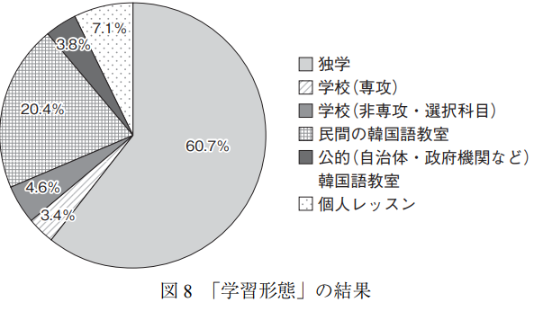

기획안: 한국어 학습 일본어 모어 화자를 위한 오디오 트레이닝 서비스
 https://www.youtube.com/shorts/2FElqMv7GWI?feature=share
https://www.youtube.com/shorts/2FElqMv7GWI?feature=share
1. 필요성
1. 급성장하는 일본 내 한국어 교육 시장
이처럼 일본인 내 한국인 학습자는 폭증하고 있다. 한국어 공인어학시험 TOPIK의 일본인 응시자 수는 2005년경부터 급등하여 2019년 기준 30만명을 초과하였다. 그에 발맞춰 한국어 교육 시장 규모도 커지고 있다.
 https://onlinechineseinfo.com/koreanstudy/2
https://onlinechineseinfo.com/koreanstudy/2
또한 2021년 일본 내 한국어 공인어학 응시자수는 1위를 차지했다. 중국어에 이어 꾸준히 2위였던 한국어 공인어학시험 응시자수가 중국어 어학시험(HSK) 응시자수를 역전하여 1위로 올라섬은 괄목할만한 성장세다.

2. 시장 규모에 비해 다소 제한적인 한국어 교육 환경
일본 출판사 J리서치의 와다 요시히로에 의하면, 일본 내 유명 대형 서점에서 판매되는 어학 학습서 중 한국어 서적 비율은 12%로 일본 어학 시장에서 급부상하며 2위를 차지하고 있다고 한다.

이처럼 한국어 학습 시장이 큰 반면, 실제 한국어 교육 환경은 열악하다. 일본인들이 실제로 한국어 학습을 위해 선택할 수 있는 선택지는 개인단위의 독학(서적)이 주 학습 경로다.

관련 논문 이나가와 우키(2017) 에서도 대부분의 일본인들은 독학(60.7%)으로 한국어를 학습하고 있음을 확인할 수 있다.
신주쿠 소재 한 어학원의 설문서도, 한국어를 학습하는 일본인 56.0%는 독학으로, 39%는 유튜브를 통해 학습하고 있음을 확인하였다. (2022년, 중복응답, n=1000)
 https://prtimes.jp/main/html/rd/p/000000001.000097770.html
https://prtimes.jp/main/html/rd/p/000000001.000097770.html
3. 한국어 학습 일본어 모어 화자의 한국어 발음 학습의 특수한 어려움
2021년의 한 조사에서는 한국어 학습 앱을 사용하기도 한다고 응답한 유저가 55%로 가장 많았다.(n=1400) 한국어 학습을 지원하는 앱 중 가장 높은 점유율을 갖고 있는 앱은 Duolingo로 확인되었다.
https://prtimes.jp/main/html/rd/p/000000007.000069537.html
그러나 Duolingo 앱의 경우, 한국어에 특화된 서비스가 아니라 단순 알고리즘 기반 정오답 채점 프로그램 수준에 불과했다. 즉 발음 실력 향상을 위한 오디오 트레이닝 서비스는 제공되고 있지 않고, 실질적으로 한국어 학습 일본인을 위한 특화 서비스는 없는 상황임을 확인할 수 있었다.

하지만 실질적으로 일본인이 한국어 학습에서 겪는 어려움들은 서적을 통한 독학이나, 유튜브 등으로는 충분히 해결하기 어려운 측면들이 있다. 사실 일본어 원어민은 통사론적 구조나 단어체계와 같은 점은 언어동조대이자 한자문화권으로써 서로 영향을 받으며 긴밀히 교류한 덕에 두 언어가 많은 유사성을 갖추어 있어 한국어 학습에 제3국 원어민보다 압도적으로 유리하다. 그런 한편, 한국어 학습에서 겪는 어려움은 음운론적 차이에서 오는 한국어의 특정한 발음 체계인데, 이는 개인 과외나, 현지 생활의 경험에서 체득하지 않는다면 스스로 바로잡기 어렵다. 엄밀히 이는 반대의 경우도 마찬가지이나, 일본어의 음운론적 체계의 고유한 특성 상 한국어 원어민이 일본어를 배울 때보다 더욱 특수한 어려움이 발생한다. 그러므로 이러한 결국 정밀한 오디오 트레이닝 서비스가 요구되는 실정이다.
4. 한국어 학습 일본어 모어 화자를 위한 오디오 트레이닝 서비스의 필요성
이화진(2021)에 따르면 한국어를 학습한 일본인들은 대표적으로 다음의 세 가지 정도를 한국어 학습의 음성학적 어려움으로 손꼽는다.
- 모음의 다양성과 음절의 구조: https://wikidocs.net/181132
하지만 이러한 세밀한 음운론적 차이는 개인화된 오디오 트레이닝 없이는 학습하기 어렵다. 이처럼 분명한 수요와 당위성이 뒷받침됨에도 불구하고, 아직까지 일본의 한국어 교육 시장에서는 이를 해결하기 위한 서비스가 전무한 실정이다.
그래서 한국어와 일본어의 음운체계 차이로 어려움을 겪는 일본어 모어 화자를 위한 한국어 오디오 트레이닝 서비스를 제안한다.
본 제안의 목적은 한국어를 배우는 일본어 모국어 화자에게 개인화된 발음 교정 서비스를 제공하여 발음 실력을 향상시키고 효과적인 학습 환경을 제공하는 것이다.
2. 제안 내용 및 범위
세부 제안 내용 및 범위
- Whisper와 Wav2Vec 2.0 모델을 결합하여 한국어 발음 오류를 탐지하고 교정하는 시스템을 구축함.
- 유튜브 데이터 수집: 일본어와 한국어로 대화하는 유튜브 영상에서 음성 데이터를 수집하여, 이를 학습 데이터로 사용함. 이를 통해 한국어와 일본어 간 발음 차이를 충분히 반영한 데이터셋을 확보함.
- 데이터 전처리 및 필터링: 수집한 데이터를 전처리하여 노이즈를 제거하고 음질을 개선함. 학습용 데이터는 한국어와 일본어가 혼용되지 않은 일관된 발음 데이터로 구성하여 모델의 학습에 사용함.
- 발음 오류 탐지 및 교정 시스템 개발: Whisper와 Wav2Vec 2.0을 사용해 한국어 발음 오류를 탐지하고, 사용자가 쉽게 이해할 수 있도록 교정 피드백을 제공함.
- langdetect를 활용한 언어 구간 구분: 한국어와 일본어가 혼용된 음성 데이터를 처리하기 위해 langdetect를 활용하여 언어 구간을 구분하고, 각 구간별로 발음 오류를 교정함.
- 웹 기반 서비스 제공: 최종적으로 사용자들이 실시간으로 발음 교정 피드백을 받을 수 있는 웹 기반 서비스를 개발함.
- 최종 산출물: 발음 교정 웹 애플리케이션, 사용자 피드백 시스템, 발음 오류 교정 보고서.
□ 구성도
- 시스템 구성도는 아래와 같은 구조로 설계됨:
- 입력 음성 -> langdetect를 통한 언어 구간 구분 -> Whisper 모델로 의도된 발음 분석 -> Wav2Vec 2.0으로 실제 발음 분석 -> 발음 오류 탐지 및 교정 피드백 제공 -> 웹 인터페이스를 통한 사용자 피드백 제공
□ 주요특징
- 차별성: 기존의 한국어 학습 앱과 달리, 한국어 발음에 특화된 개인 맞춤형 발음 교정 시스템을 제공함.
- 혁신성: Whisper와 Wav2Vec 2.0을 결합하여 발음 오류를 탐지하고 교정하는 자동화된 시스템을 구축함.
- 독창성: 한국어와 일본어의 음운론적 차이를 고려하여, langdetect를 통해 혼용된 언어 구간을 분리하고 각 언어에 맞춘 교정 피드백을 제공함.
3. 구현 계획 및 방법
- ICT 기술 활용: Whisper와 Wav2Vec 2.0, langdetect, pytube, Streamlit 등을 활용하여 시스템을 구현할 계획임. Whisper와 Wav2Vec 2.0을 사용해 음성을 분석하고, langdetect를 통해 언어 구간을 자동으로 구분함.
- 구현 과정: 프로젝트는 6단계로 진행됨:
- 데이터 수집 및 전처리 (1-3주)
- 유튜브 영상 데이터 수집: pytube 라이브러리를 활용하여 일본어와 한국어 대화 영상을 다운로드하고, 해당 영상에서 음성 데이터를 추출함. 이 과정에서 한국어와 일본어의 발음 차이를 잘 반영할 수 있는 다양한 영상 콘텐츠를 선정함.
- 데이터 전처리: 수집된 음성 데이터를 노이즈 제거와 음질 향상을 위한 필터링을 통해 전처리함. 특히 음성 내의 잡음을 최소화하여 발음 분석의 정확도를 높임. 또한, Konlpy와 Mecab 등 한국어 형태소 분석기와 Sudachi와 같은 일본어 형태소 분석기를 사용하여 발음 교정을 위한 텍스트 데이터 분석 준비를 완료함.
- 데이터 필터링: 언어 혼용 데이터와 일관된 발음 데이터를 구분하고, 학습에 적합한 고품질 데이터를 선별함.
- 발음 규칙 정의 및 모델 구현 (3-5주)
- 발음 규칙 수립: 한국어의 음운론적 규칙을 정의하고, 발음 오류를 탐지하기 위한 음소 및 음운 분석을 진행함. 이를 통해 정확한 발음 기준을 설정하고, 일본어 화자에게 어려운 발음 유형(예: 된소리, 받침 발음 등)을 명확히 정의함.
- 발음 규칙 모델 구현: 수립된 발음 규칙을 바탕으로 발음 오류를 탐지하고 교정하는 규칙 기반 모델을 구현함. 사용자가 발음하는 음성을 이 규칙과 비교하여 오류를 탐지함.
- Whisper와 Wav2Vec 2.0 모델 학습 및 통합 (6-8주)
- Whisper 모델 학습: Whisper 모델을 활용해 음성 데이터를 텍스트로 변환하는 작업을 진행함. Whisper는 한국어 발음의 의도된 텍스트를 추정하여 이후 Wav2Vec 2.0과 비교할 기준 데이터를 생성함.
- Wav2Vec 2.0 모델 학습: Wav2Vec 2.0을 활용하여 실제 발음 데이터를 분석함. 이 모델은 음성 신호를 음소 단위로 세분화하여, 발음 오류가 발생하는 음소를 탐지함.
- 모델 통합: Whisper와 Wav2Vec 2.0의 결과를 비교하는 알고리즘을 구현하여, 의도된 발음과 실제 발음 간의 차이를 분석함. 이를 통해 발음 오류를 정확하게 탐지하고, 학습자가 이해할 수 있는 구체적인 교정 피드백을 제공함.
- 언어 구간 분리 및 오류 교정 (9-11주)
- langdetect 활용: langdetect 라이브러리를 사용하여 한국어와 일본어가 혼용된 음성 데이터를 자동으로 구분함. 학습자가 코드 스위칭을 사용하는 경우, 해당 언어 구간을 구분하여 각 구간에 맞는 교정을 제공함.
- 구간별 발음 오류 교정: 한국어 구간에서는 Whisper와 Wav2Vec 2.0을 통해 발음 오류를 탐지하고 교정 피드백을 제공함. 일본어 구간에서는 일본어 화자의 발음을 분석하여 적절한 발음 여부를 판단하고 피드백을 제공함.
- 시각적 및 음성적 피드백 제공: 발음 오류가 탐지된 부분에 대해 시각적으로 해당 음소를 강조하고, 교정 방법을 텍스트와 음성으로 제공하여 학습자가 쉽게 이해할 수 있도록 함.
- 테스트 및 성능 개선 (12-14주)
- 시스템 통합 테스트: Whisper, Wav2Vec 2.0, langdetect 모듈을 통합하여 전체 시스템의 동작을 테스트함. 다양한 발음을 포함한 데이터를 사용해 발음 오류 탐지와 교정 피드백의 정확도를 평가함.
- 성능 개선: 테스트 결과를 바탕으로 모델의 성능을 개선함. 오류 탐지가 미흡한 부분을 분석하여 모델 학습 파라미터를 조정하고, 새로운 데이터셋을 추가 학습하여 탐지 정확도를 높임.
- 사용자 테스트 및 피드백 반영: 초기 사용자 그룹을 대상으로 베타 테스트를 진행하고, 사용자로부터 피드백을 수집함. 이를 바탕으로 교정 피드백의 품질을 개선하고, 사용자 경험을 최적화함.
- 배포 및 사용자 피드백 수집 (15-16주)
- 웹 기반 서비스 배포: Streamlit을 사용하여 간단하고 직관적인 웹 인터페이스를 구축함. 사용자는 웹을 통해 자신의 발음을 녹음하고, 즉각적인 피드백을 받을 수 있음. 필요에 따라 Flask나 Django와 같은 더 복잡한 웹 프레임워크로 기능을 확장하여 다중 사용자 지원 및 확장성을 제공할 수 있음.
- 사용자 피드백 수집 및 개선: 사용자들이 실제로 서비스를 사용하면서 제공한 피드백을 수집하여 시스템의 발음 교정 정확도와 사용자 인터페이스의 편의성을 평가함. 수집된 피드백을 반영하여 시스템을 지속적으로 개선하고, 사용자 경험을 최적화함.
- 데이터 수집 및 전처리 (1-3주)
- 예상 장애 요소 및 해결방안:
- 데이터 품질 문제: 수집된 음성 데이터의 품질이 낮아 분석에 영향을 미칠 경우, 전처리 과정에서 노이즈 제거 및 필터링을 통해 음질을 개선하고, 고품질 데이터를 확보하여 문제를 해결함.
- 발음 오류 탐지 정확도 부족: 다양한 발음 데이터를 학습하여 모델의 성능을 개선하고, 지속적으로 사용자 피드백을 반영하여 시스템을
3. 데이터셋 및 기술적 참고자료
- 인공지능 학습을 위한 외국인 한국어 발화 음성 데이터 (일본어 모어 화자 포함, AIHUB)AI-Hub※샘플데이터는 데이터의 이해를 돕기 위해 별도로 가공하여 제공하는 정보로써 원본 데이터와 차이가 있을 수 있으며, 데이터에 따라서 민감한 정보는 일부 마스킹(*) 처리가 되어 있을 수 있습니다.
https://aihub.or.kr/aihubdata/data/view.do?currMenu=115&topMenu=100&aihubDataSe=realm&dataSetSn=505
- 한국어-일본어 번역 말뭉치 (AIHUB)AI-Hub※샘플데이터는 데이터의 이해를 돕기 위해 별도로 가공하여 제공하는 정보로써 원본 데이터와 차이가 있을 수 있으며, 데이터에 따라서 민감한 정보는 일부 마스킹(*) 처리가 되어 있을 수 있습니다.
- 방송 콘텐츠 한-일 번역 병렬 말뭉치 데이터(AIHUB)AI-Hub※샘플데이터는 데이터의 이해를 돕기 위해 별도로 가공하여 제공하는 정보로써 원본 데이터와 차이가 있을 수 있으며, 데이터에 따라서 민감한 정보는 일부 마스킹(*) 처리가 되어 있을 수 있습니다.
https://www.aihub.or.kr/aihubdata/data/view.do?currMenu=115&topMenu=100&aihubDataSe=realm&dataSetSn=546
- 일상생활 및 구어체 한-일 번역 병렬 말뭉치 데이터(AIHUB)AI-Hub※샘플데이터는 데이터의 이해를 돕기 위해 별도로 가공하여 제공하는 정보로써 원본 데이터와 차이가 있을 수 있으며, 데이터에 따라서 민감한 정보는 일부 마스킹(*) 처리가 되어 있을 수 있습니다.
- 한국어 모어 화자에게 수집한 일본어 발화 코퍼스 (LSAJLSAJ中国語母語話者3名、韓国語母語話者3名、計6名の日本語学習者を3年間縦断的に調査し、データを収集した、発話コーパスです。 コーパスの名称は「中国語・韓国語母語の日本語学習者縦断発話コーパス」、略称は「C-JAS（Corpus of Japanese as a Second Language）」です。収録したデータ量は、約46.5時間分で、総語数は約57万語です。 オンラインで検索システムが使え、形態素単位や文字列で用例を検索することができます。
https://www2.ninjal.ac.jp/jll/lsaj/
- 일본 국립 일본어연구소 일본어 코퍼스 목록(NINJAL), NINJAL2022/04/01
 https://clrd.ninjal.ac.jp/en/
https://clrd.ninjal.ac.jp/en/
- 일본어 발음 평가 진단 프로그램 (ALL about Japanese)AJ - All about Japanese - www.Japanese.or.krResearcher can test Japanese learner on hearing and pronunciation skills. And Japanese learners can practice and upgrade their hearing and pronunciation skills.http://www.japanese.or.kr/phonetic_main.aspx
- 세종 한일 병렬 말뭉치 검색 시스템(NARA ver. 2.0)http://corpus.mireene.com/ssh/publications/26-9.pdf
 https://github.com/boostcampaitech5/level3_nlp_finalproject-nlp-13
https://github.com/boostcampaitech5/level3_nlp_finalproject-nlp-13- 2022 데이터 청년 캠퍼스 우수 프로젝트 - 청각장애인 대상 영어 발음 교정 서비스[2022 데이터 청년 캠퍼스] 2022 데이터 청년 캠퍼스 우수 프로젝트 발표 (한국외국어대학교 빈센조!)2022년 데이터 청년 캠퍼스 우수 프로젝트 발표영상입니다. 발표팀은 운영대학 한국외국어대학교의 '빈센조!'팀이며, 주제는 [청각장애인 대상 영어 발음 교정 서비스] 입니다. 데이터 청년 캠퍼스는 12주간의 데이터 교육과 취업연계까지 지원하는 한국데이터산업진흥원 인재 양성 프로그램입니다. 데이터 청년 캠퍼스에 대한 자세한 설명은 아래 링크를 참조해주세요. 👉https://dataonair.or.kr/bigjob/
 https://www.youtube.com/watch?v=JRJ_xtxzV-I
https://www.youtube.com/watch?v=JRJ_xtxzV-I
위 9,10번 프로젝트의 접근방법 참고하여, 기술적 측면에서 일본어 모어 화자에 최적화되도록 튜닝하여 차별화해 압도적인 성능을 구현한다면 기술적 경쟁력 및 서비스 타당성이 될 수 있을 것이다. 추가로 피드백 내용을 전달할 수 있는 UX/UI 구현하면 더욱 사용자 친화적 서비스로 발전 가능
4. 참고문헌
관련 논문

 https://www.kci.go.kr/kciportal/landing/article.kci?arti_id=ART001970757
https://www.kci.go.kr/kciportal/landing/article.kci?arti_id=ART001970757
 https://www.dbpia.co.kr/journal/articleDetail?nodeId=NODE02349434
https://www.dbpia.co.kr/journal/articleDetail?nodeId=NODE02349434 https://www.dbpia.co.kr/journal/articleDetail?nodeId=NODE11037540&nodeId=NODE11037540&medaTypeCode=185005&language=ko_KR&hasTopBanner=true
https://www.dbpia.co.kr/journal/articleDetail?nodeId=NODE11037540&nodeId=NODE11037540&medaTypeCode=185005&language=ko_KR&hasTopBanner=true https://www.dbpia.co.kr/journal/articleDetail?nodeId=NODE02269367
https://www.dbpia.co.kr/journal/articleDetail?nodeId=NODE02269367 https://www.dbpia.co.kr/journal/articleDetail?nodeId=NODE10761462https://www.dbpia.co.kr/journal/articleDetail?nodeId=NODE08838909https://www.dbpia.co.kr/journal/articleDetail?nodeId=NODE09235049https://www.dbpia.co.kr/journal/articleDetail?nodeId=NODE11280986https://www.dbpia.co.kr/journal/articleDetail?nodeId=NODE11438586
https://www.dbpia.co.kr/journal/articleDetail?nodeId=NODE10761462https://www.dbpia.co.kr/journal/articleDetail?nodeId=NODE08838909https://www.dbpia.co.kr/journal/articleDetail?nodeId=NODE09235049https://www.dbpia.co.kr/journal/articleDetail?nodeId=NODE11280986https://www.dbpia.co.kr/journal/articleDetail?nodeId=NODE11438586
 https://scienceon.kisti.re.kr/srch/selectPORSrchArticle.do?cn=DIKO0007508029&dbt=DIKO
https://scienceon.kisti.re.kr/srch/selectPORSrchArticle.do?cn=DIKO0007508029&dbt=DIKO https://www.dbpia.co.kr/journal/articleDetail?nodeId=NODE11308006
https://www.dbpia.co.kr/journal/articleDetail?nodeId=NODE113080065. 향후 발전 가능성
지난 2020년 네이버는 보도자료를 통해 한국어-일본어 AI언어모델을 구축하겠다고 밝혔다. 해당 모델은 마침 약 보름 후인 2023년 8월 24일 하이퍼클로바X 라는 이름으로 공개 예정이다. 시의성 측면에서도 유의미한 프로젝트다.


향후 하이퍼클로바X와 같은 한국어-일본어 집중 언어 모델과 연계하여 성능 및 서비스 품질 향상 가능한 점도 일본어 모어 화자를 타겟으로 한 한국어 오디오 트레이닝 서비스가 사업타당성이 있는 또 하나의 이유다.
나아가 네이버는 현재 일본 시장을 타겟으로도 AI모델을 구축하고 있는데, 이러한 국내 기업의 사업 방향성과도 시너지를 낼 수 있는 서비스로서 추진력 및 시장 경쟁력을 선제적으로 확보할 수 있다.
 https://www.etnews.com/20230315000220
https://www.etnews.com/20230315000220
6. 최종 서비스 형태
아래와 같은 형태로, 오락성 문화 콘텐츠와 연계하되, 단순 회화 학습보다는 오디오 트레이닝을 중점적으로 학습 동기를 자극하면서도 해당 미디어 콘텐츠의 적합한 대사 등을 발췌하여 발음 학습 능률에 집중하도록 서비스. 단, 저작권 이슈가 해소되어야 할 것.

- 일본 애니로 배우는 일본어 (대학 강의)고려대학교에 '귀멸의 칼날' 일본어 강의가 개설됐다교수가 직접 '하입비스트'에 밝힌 수업 개설 이유는?
 https://hypebeast.kr/2022/8/demon-slayer-kimetsu-no-yaiba-japanese-lecture-in-korea-university-news
https://hypebeast.kr/2022/8/demon-slayer-kimetsu-no-yaiba-japanese-lecture-in-korea-university-news

{kind=link}
- 한국 드라마 대사로 한국어 학습 시 주의사항韓国語の勉強に最適なオススメ韓国ドラマ5選！【2023年最新版】｜all about 韓国[chat face="調べハム.jpg" name="ハムくん" align="left" border="yello
 https://allabout-kankoku.info/52/
https://allabout-kankoku.info/52/